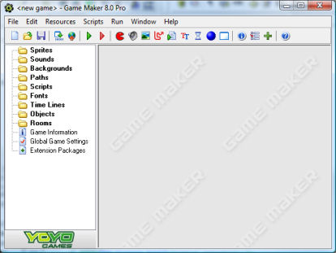

Advanced mode
Up to now we have only considered the simple features of Game
Maker. But there are a lot more possibilities. To be able to
use these you must run Game Maker in advanced mode. This is
easy to change. In the File menu, click on the menu item
Advanced mode. (To fully see the effects you should restart
Game Maker or at least save your game and load it anew.)
When you start Game Maker in advanced mode, the following
form is shown:

It contains all that was there in simple mode, but there are a
number of additional resources, buttons, and menu items. Also, as
we will see in the chapters that follow, the different resources
have additional options. Here we will discuss the additional menu
items.
File menu
In the file menu you can find the following additional commands:
- Publish your Game. This command will take you to our
website were you can easily upload and publish your finished game
such that everybody can play it. Carefully follow the instructions
to make your game available. Please only use this for finished
games, not for preliminary versions. This possibility is only
available in the Standard Edition.
- Import Resources. With this command you can import
resources that you exported with the next command. See the section
on Exporting and Importing
Resources for more details.
- Export Resources. With this command you can export
resources to a file. See the section on Exporting and Importing Resources for more
details.
- Preferences. Here you can set a number of preferences
about Game Maker. They will be remembered between different
calls of Game Maker. For more information see the page on
Preferences.
Edit menu
In the edit menu you can find the following additional commands:
- Add group. Resources can be grouped together. This is
very useful when you make large games. For example, you can put all
sounds related to a certain object in a group, or you can group all
objects that are used in a particular level. This command creates a
new group in the currently selected resource type. You will be
asked for a name. Groups can again contain groups, etc. You can
drag resources into the groups.
- Find Resource. With this command you type in the name of
a resource and it open the corresponding property form.
- Expand Resource Tree. Fully expands the resource tree,
showing all resources.
- Collapse Resource Tree. Fully collapses the resource
tree, hiding all resources.
- Show Object Information. Using this command you can get
an overview of all objects in the game.
Resources menu
In this menu you can now also create the additional resources. Note
that for each of them there is also a button on the toolbar and a
keyboard shortcut. There are three special menu items at the
bottom:
- Define Constants. Here you can define constants for use
in your scripts and action arguments. For more information see the
section on Constants.
- Define Triggers. Here you can define your own trigger
events. For more information see the section on Trigger Events.
- Included Files. Here you can indicate which additional
files should be included in the game executable. For more
information see the section on Including Files.
Scripts menu
In the scripts menu you can find the following additional commands:
- Import Scripts. Can be used to import useful scripts
from files.
- Export Scripts. Can be used to save your scripts in a
file, to be used by others. When you select a script resource only
this script is saved. When you select a group all scripts in the
group are saved. When you select the root resource (or a different
type of resource) all scripts are saved. This menu item is also
available when right-clicking on a script or group of scripts.
- Show Built-in Variables. Shows a sorted list of all
built-in variables, both local and global.
- Show Built-in Functions. Shows a sorted list of all
built-in functions.
- Show Extension Functions. Shows a sorted list of all
functions available in the extension packages you included in your
game.
- Show Constants. Shows a sorted list of all built-in
constants and constants defined in the game options.
- Show Resource Names. Shows a sorted list of all resource
names. You can click on a name to open the particular resource for
editing.
- Search in Scripts. You can search for a string in all
scripts. You can click on one of the reported places to move there
for editing.
- Check Resource Names. Does a check of all resource
names. Names will be reported if they are not correct, if there are
duplicate resource names, or when a resource name is the name of a
variable, function, or constant. You can click on a name to open
the particular resource for editing.
- Check All Scripts. Checks all scripts for errors. You
can click on one of the reported places to move there for
editing.
Help menu
Here you can now also find help information about the extension
packages you are using.